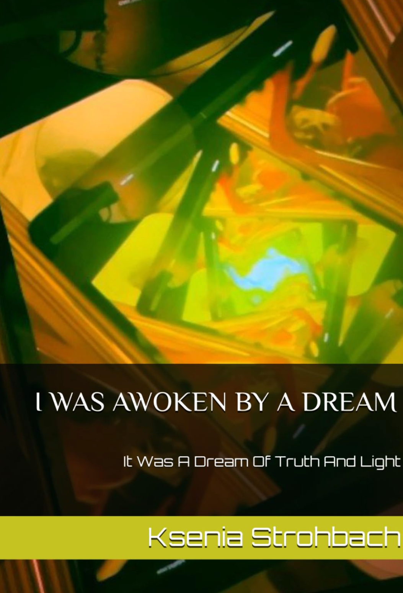

Temporal Observation Protocol
Welcome to my archive. Explore visual recordings, temporal fragments, and poetry captured through the lenses of a time machine.
Initiate SequenceA collection of 87 temporal captures. These artworks act as windows into different dimensions, observed through the machine's optics.
Moving pictures. Unedited footage directly extracted from the machine's core memory banks.
Access the full archive of visual temporal recordings directly on YouTube. Click the lens to establish the connection.
A detailed look into different fragmented timelines, sorted into playlists.
First ever contact has been established. Watch the record as it is
Exploring the concept of meaning in the context of temporal anomalies.
Chronicles extracted from the temporal archives. Stories recovered from the machine's memory.

What does it mean to be truly alive?
This poetry collection offers a deeply human invitation to honor our multifaceted identities, reminding us that genuine change in the world starts with self-love. It challenges us to break free from rigid thinking and experience life in the present moment. It is a manifesto for autonomy over one's own body, the freedom to make authentic choices and the courage to confront one's own questions. Accompanying this visual journey are custom-created artworks, including stunning photographs of glowing Petri dishes that resemble spiral galaxies, and video feedback loops that visualize infinity and recursion. This book is for anyone who recognizes the poetry in science and the logic in art. It provides literary proof that the vast universe and our own fragile microcosm and macrocosm are inextricably linked. #recursion #selflove #poetry #art #mathematics #science #philosophyDie Neuauflage wurde im Selbstverlag im Wirtschaftsjahr 2025 veröffentlicht.
Die Ereignisse sind auf unvorhersehbare Weise miteinander verknüpft. #haiku #poetry #shortstories #selfpublishingAuthorIn | KünstlerIn/ZeitgeistIn